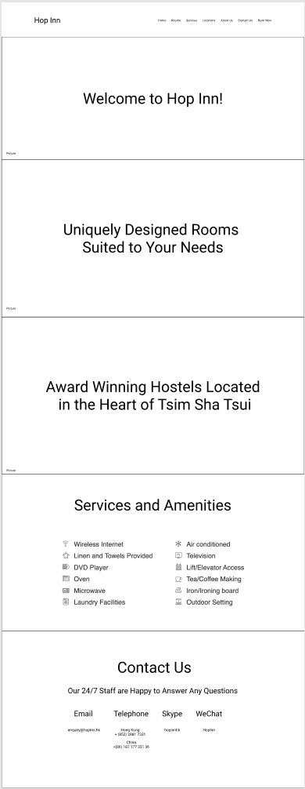
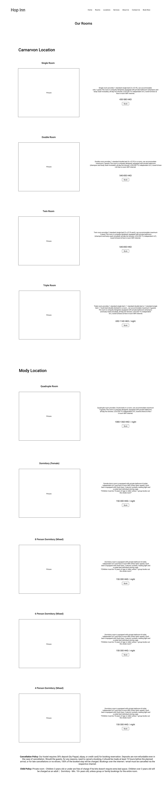
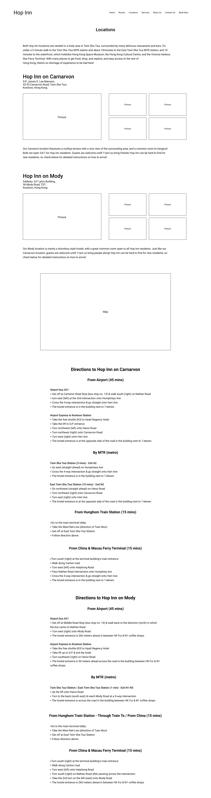
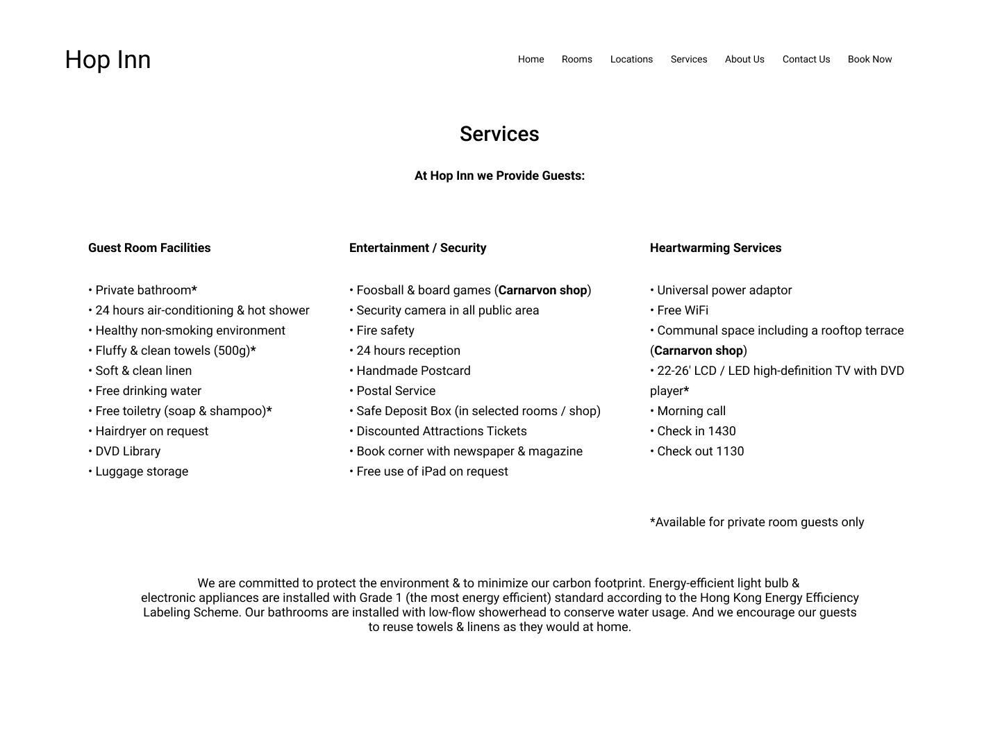
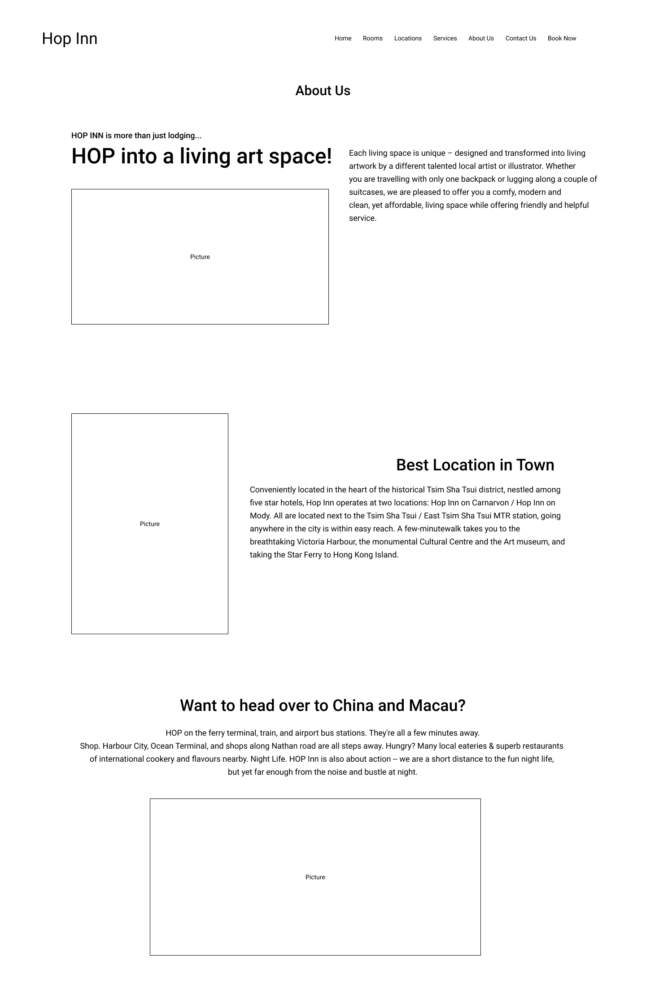
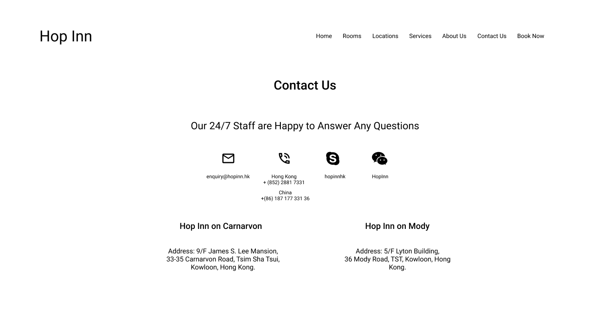

Cleaning up Hop Inn's Website | UI/UX Design
Hop Inn is a high rated hostel company located in Hong Kong with two locations, Hop Inn on Carnarvon, and Hop Inn on Mody. Both hostels are located in Tsim Sha Tsui, an urban area nestled in Kowloon, Hong Kong. Both locations have an emphasis on art - each room was designed by local artists. During my study abroad period in Hong Kong, I lived at Hop Inn on Carnarvon. I decided to redesign their website after being assigned a website redesign project in my user interface class at Hong Kong City U.
Tools Used
Figma
Photoshop
User Testing
Problem Statement
Hop Inn’s current website suffers from information overload. Each page has a large amount of text packed with useful info for a person looking to stay at their hostels. The issue is, it’s organized quite poorly. Important information gets lost in blocks of text, font colours blend in with background images, and key information can be hard to find. Everything is there, though information needs to be presented a bit differently to give the users a more concise experience.
Users and Audience
During my time at Hop Inn, I got to meet and converse with many different types of people. These people came from all over the world, and the purposes to as of why these people were staying at Hop Inn varied. Throughout the redesign process I asked guests questions about their experiences using the website, and experience at Hop Inn as a whole. Furthermore, I asked guests to complete specific actions on Hop Inn's website. It was quite convenient having a good portion of the Hop Inn website’s user base right within my reach.
Roles and Responsibilities
This redesign was a project for my interface design course at Hong Kong City University. The project was individual, meaning in the making of this redesign I was a team of one. I handled the user research, conducted user experience and user interface testing, and designed the redesign as a whole.
Scope and Restraints
The project was open ended, and to be completed within a span of two months. We were given the task of redesigning a website, simple as that. There was no rubric or instructions on how to do so. I chose Hop Inn because I realized I had rich access to relevant user testing from the people living within the hostel, and remembered the scattered state of the website from back when I booked my stay before leaving for Hong Kong. Living at the hostel you’re redesigning a website for is bound to cause some bias, so I stuck to findings from user research to guide my choices.
Process and What I Did
To begin with the redesign, I studied Hop Inn’s current website. I then created a list of tasks for users of the website to complete. Examples of the tasks I gave are, ‘find information about the Mody location of Hop Inn’, and ‘book a room’. I also compiled a list of questions about the website, some examples being, ‘What do you think are some strengths of the website?’, and ‘What sort of things would deter you from booking a hostel?’. I asked people staying at the hostel, along with people back home to complete the actions and answer the questions. I extrapolated findings from the actions and questions, and found key issues and strengths of the website according to my test subjects.
Key Strengths
1. Existing information on website is valuable
2. The website gives a warm feeling.
3. The website is transparant about pricing
4. Including images helped the site.
Key Weaknesses
1. Website looks outdated.
2. Information is disorganized.
3. There is a lack of differentiation between locations
4. Some text is hard to read due to colour and background choice.
From here I started to work on wireframes with these strengths and issues in mind. Hop Inn has an information issue. Though there is some missing information (individual information about the Carnarvon location and the Mody location), the information supplied is great, but the presentation of the information is a bit daunting. It can be hard to find things relevant to the needs of potential customers. I was tasked to clean everything up, while making sure to keep the valuable information present. The wireframes are shown below.
Home Page
Rooms Page
Locations Page
Services Page
About Us Page
Contact Page
After user testing the wireframes, I was told by testers that the services page still seemed overcrowded, having too much info in one place. After talking to my professor, he also told me to tone down the scroll on the home page, as he said that people will generally lose their attention span before making it down 2 pages worth of scroll. I changed up the services page, and after some grievance (I really liked the scroll of the home page), I shortened the content available on the home page. With this feedback, I created the high fidelity mockups.
High Fidelity Mockup